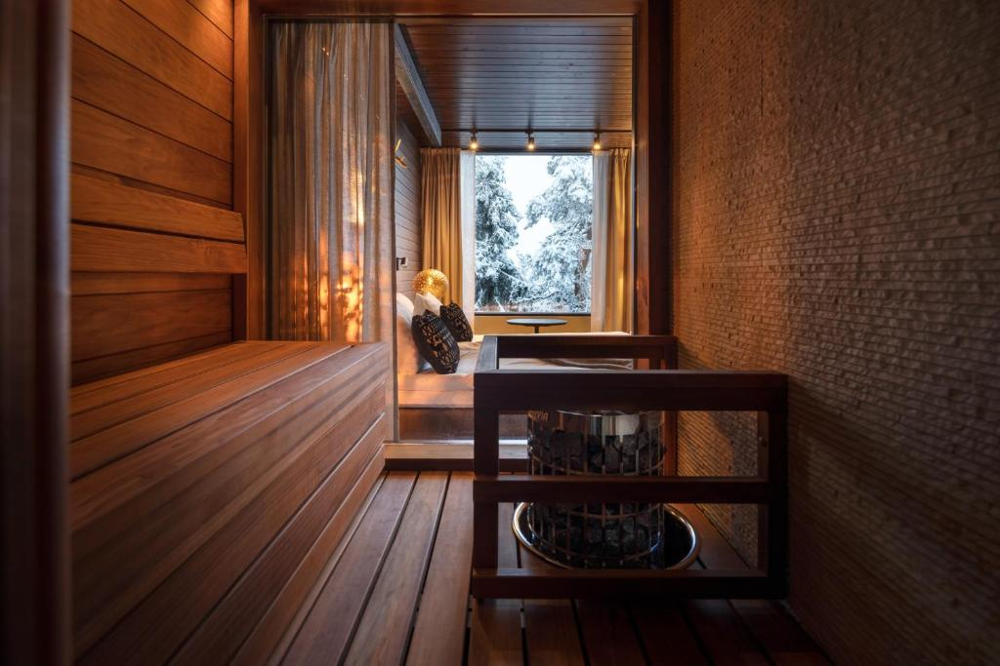
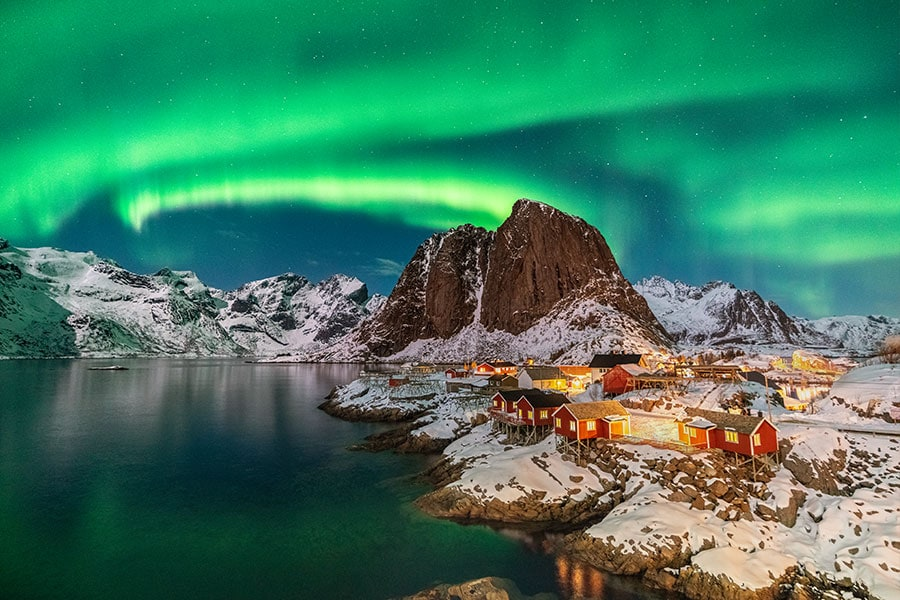
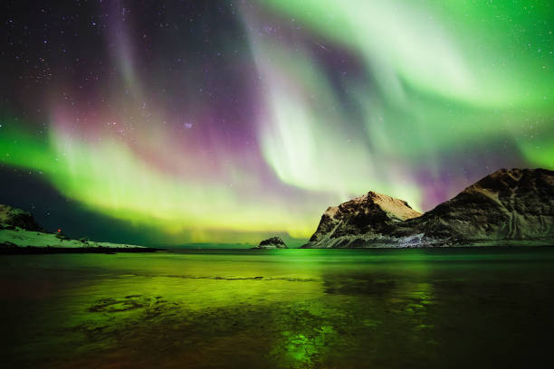
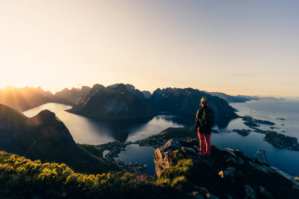

Auroras boreales
Descripción
Un viaje inolvidable entre paisajes nevados y cielos iluminados por la magia del norte. Tres dias y
dos noches
En Rovaniemi, el invierno convierte Laponia en un paisaje de cuento, ideal para contemplar la aurora
boreal bajo los cielos del Ártico. Durante la experiencia, las noches estarán dedicadas a la
observación astronómica, mientras que los días permitirán descubrir la cultura local, la naturaleza
nevada y las tradiciones del norte de Finlandia.
Gracias a sus largas noches y a la baja contaminación lumínica, Rovaniemi ofrece excelentes condiciones para observar auroras boreales entre septiembre y marzo. Además, el viaje incluye actividades típicas de Laponia, acercamiento a la cultura sami y la oportunidad de conocer las leyendas y explicaciones científicas del cielo polar.
Estadia en : Lapland Hotels Sky Ounasvaara. Situado junto al centro de deportes de invierno Ounasvaara, en la colina de Ounasvaara, alberga restaurante y una terraza en la azotea con vistas a la ciudad de Rovaniemi y al valle del río Kemijoki. Hay aparcamiento gratuito.
Más asequible que nunca
¿Sabías que la corona noruega está en sus mínimos históricos? En otras palabras, ahora viajar a Noruega es mucho más barato para una gran cantidad de países. Y tú, ¿a qué esperas?
Itinerario
Día 1 - 17 de Mayo - Llegada a Laponia
Rovaniemi · 16:00 - 22:00
La aventura comienza con la llegada a Rovaniemi, capital de la Laponia finlandesa y uno de los mejores lugares del mundo para observar auroras boreales. Tras el traslado y la instalación en el alojamiento, habrá tiempo para recorrer el centro de la ciudad y disfrutar del primer contacto con el paisaje ártico.
Por la noche, se realizará una primera salida de observación astronómica en las afueras de Rovaniemi, lejos de la contaminación lumínica. Durante la experiencia, se aprenderá sobre las auroras boreales, las constelaciones visibles del hemisferio norte y las leyendas del cielo polar mientras se contempla el paisaje nevado bajo las estrellas.

Día 2 - 18 de Mayo - Cultura sami y naturaleza ártica
Bosques de Laponia y pueblos cercanos · 09:00 - 18:00
El segundo día estará dedicado a descubrir la esencia de la Laponia finlandesa. La jornada comenzará con una excursión por los bosques nevados que rodean Rovaniemi, atravesando senderos cubiertos de hielo y paisajes completamente blancos.
Durante el recorrido se visitarán pequeños pueblos tradicionales de la región, donde los viajeros podrán conocer más sobre la cultura sami, las costumbres locales y la vida en el Ártico. También habrá momentos para disfrutar de la gastronomía típica y aprender sobre la relación histórica entre los habitantes del norte y las auroras boreales.

Día 2 - 18 de Mayo - Noche de auroras boreales
Zona ártica de Rovaniemi · 20:00 - 01:00
Cuando cae la noche, comienza una de las experiencias más especiales del viaje. Se realizará una expedición nocturna hacia zonas remotas con cielos despejados y mínima iluminación artificial, aumentando las posibilidades de contemplar la aurora boreal en todo su esplendor.
Acompañados por guías especializados, los viajeros podrán observar el fenómeno natural mientras descubren las explicaciones científicas detrás de las luces del norte y escuchan historias tradicionales del pueblo sami relacionadas con el cielo polar.

Día 3 - 19 de Mayo - Exploración del círculo polar ártico
Santa Claus Village y alrededores · 10:00 - 17:00
La experiencia continúa con una visita al famoso Círculo Polar Ártico, uno de los lugares más emblemáticos de Rovaniemi. Durante el día se explorarán zonas nevadas, mercados locales y espacios naturales únicos del norte de Finlandia.
Además de disfrutar del ambiente invernal, los viajeros tendrán tiempo libre para pasear, tomar fotografías de los paisajes helados y relajarse rodeados por la tranquilidad característica de Laponia.

Día 3 - 19 de Mayo - Regreso
Rovaniemi · 17:30
El viaje finaliza con el traslado al aeropuerto y el regreso, llevando consigo la experiencia única de haber contemplado uno de los fenómenos naturales más impresionantes del planeta.
Nota importante: Los programas descritos son susceptibles de cambios por razones puntuales ajenas a nuestra organización, tales como condiciones meteorológicas o de seguridad.
Observaciones
- Si alguien tiene alergia o intolerancia a algún tipo de alimento deberá comunicarlo a la agencia para prever incidentes inesperados que cundan el panico.
- Si alguien tiene algún tipo de enfermedad que afecte a la respiración, resistencia o movimiento, deberá comunicarlo a la agencia para prever una mayor seguridad y adaptación.
- Si traen menores de edad o acompañan a personas con necesidades especiales, manténganse pendientes de ellos y no se separen en ningún momento. Recuerden presentárselos a los guías e informarles de todo lo necesario que deban tener en cuenta.
- Cualquier siniestro sucedido durante el viaje o emergencia médica será responsabilidad económica de la propia persona afectada. Los costes correrán por cuenta del viajero. Se le acompañará o transportará a la zona de asistencia médica más cercana y, si es posible, el grupo continuará su recorrido.Si el viajero se recupera a tiempo para el regreso, será reincorporado al viaje. En caso de que no sea posible, deberá ponerse en contacto con sus familiares, amigos u otras personas de confianza para poder regresar a su hogar cuando esté recuperado.
Gastos de anulación según fecha de salida
| HASTA | IMPORTE |
|---|---|
| Más de dos meses de anticipación | 0% |
| Un mes de anticipación | 40% |
| Una semana de anticipación | 80% |
| El dia del viaje | 100% |
Conforme más se acerque a la fecha de salida el importe que se le quitara a su viaje sera mayor.
El precio incluye
- Alojamiento completo
- Guía especializado
- Billete de avión
- Excursiones nocturnas
El precio no incluye
- Transporte interno
- Comidas y cenas
- Seguro opcional
- Gastos personales
Preguntas frecuentes
Aprende mas sobre tu viaje, no te pierdas nada.
La mejor temporada va de septiembre a marzo, cuando las noches son más largas y oscuras. Durante esos meses, las posibilidades de observar auroras boreales aumentan considerablemente.
Sin embargo, también es posible verlas en noviembre, diciembre, enero y
febrero. Solo tienes que cruzar los dedos para que una tormenta solar envíe algunas partículas
mágicas en tu dirección...
No te preocupes si nuestra diva verde te hace esperar, hay muchas otras actividades inolvidables
que puedes hacer en el Norte de Noruega.
1. El espectáculo de luces de las auroras aparece cuando partículas procedentes de explosiones y llamaradas solares son arrastradas a la atmósfera por el campo magnético de la Tierra y chocan que es lo que conocemos como la aurora boreal.
2. El color de la luz depende del tipo de átomos implicados en la colisión.
3. La aurora boreal no es el único espectáculo de luces que ofrece el universo. El hemisferio sur tiene su propia versión llamada aurora australis, las luces del sur.
Como en esta enorme zona geográfica viven cientos de miles de personas, la región del Norte de Noruega tiene de todo: desde ciudades con una gran vida nocturna y excelentes museos hasta pequeños pueblos pesqueros y vastos espacios tranquilos sin contaminación lumínica.
Sí. Rovaniemi es uno de los destinos turísticos más seguros de Europa. Además, todas las actividades se realizan con guías especializados y en entornos preparados para viajeros.
El alojamiento se realiza en hoteles o cabañas confortables adaptadas al clima ártico, con calefacción, servicios privados y zonas comunes acogedoras.
Las temperaturas pueden ser bajas, pero el viaje está preparado para ello. Se recomienda llevar ropa térmica y de invierno adecuada para disfrutar cómodamente de todas las actividades.
No. Todas las actividades están pensadas para cualquier viajero, independientemente de su experiencia física o conocimientos sobre astronomía.